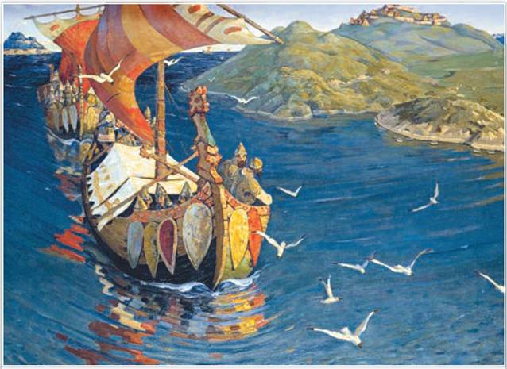
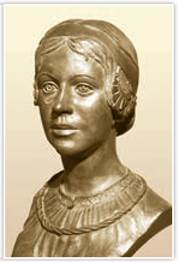
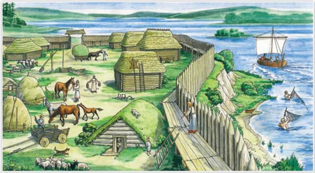
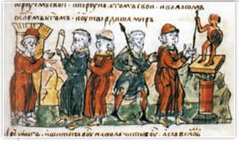
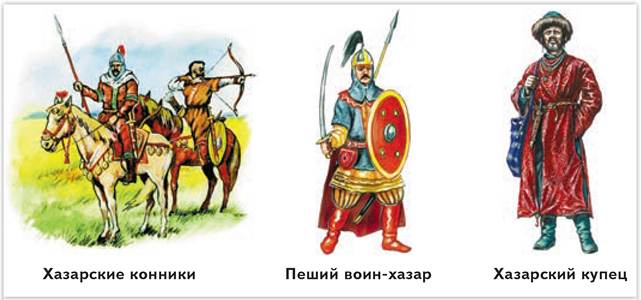
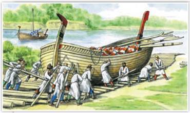

Заморские гости. Художник Н. Рерих. 1901 г. Государственная Третьяковская галерея. Москва
Река Волхов, по которой плывёт ладья с «заморскими гостями», протекает на северо-западе нашей страны (в Ленинградской и Новгородской областях). В правом верхнем углу картины виднеется поселение славян.
РОССИЯ
МИР
1. Заселение славянами Восточно-Европейской равнины. С VI в. большую роль в освоении лесной и лесостепной полосы Восточной Европы стали играть восточные славяне. Обширность земель и малая численность местного населения объясняют мирный характер расселения восточных славян.
Великое переселение народов изменило исторические судьбы множества народов. Германские племена обосновались на землях с тёплым климатом и плодородными почвами. Они получили богатое античное наследие: правовые, технические и культурные достижения древних греков и римлян. Восточные славяне заняли территории в основном с суровыми природными условиями, расселившись от Ладожского озера на севере до Причерноморских степей на юге, от Карпат на западе до верхнего течения Волги и Дона на востоке. Влияние древних цивилизаций почти не затронуло большую часть этих земель.
Со временем произошло постепенное слияние большей части финно-угров и балтов с восточными славянами. Местные жители перенимали у славян культуру земледелия, язык, верования, легенды, особенности быта. Влияние народов было взаимным. Славяне заимствовали у финно-угров планировку жилища, навыки охоты на пушного зверя и рыбной ловли. Некоторые племена финно-угров сохранили свою самостоятельность, но платили славянам дань — побор в виде части доходов и продуктов.
2. Хозяйство восточных славян. Восточные славяне вели натуральное хозяйство — всё необходимое для жизни они производили для собственного потребления, а не на продажу. Главным занятием у них было земледелие. В лесных зонах севера и северо-востока славяне применяли подсечно-огневое земледелие, в степных и лесостепных краях — перелог.

Женщина из племени славян-вятичей. XII в. Реконструкция М. Герасимова. Музей Москвы
Одно из значений слова «реконструкция» — восстановление, воссоздание первоначального вида чего-либо по остаткам, описаниям. Метод восстановления облика человека по его костным останкам разработал советский археолог, антрополог и скульптор М. Герасимов. Учёный создавал скульптурные портреты древнейших людей, а также известных исторических деятелей прошлого. Многие его работы можно увидеть в биологических, исторических и антропологических музеях. Одна из книг об учёном называется «Михаил Герасимов: Я ищу лица. О восстановлении внешнего облика исторических лиц». Уникальный научный метод Герасимова признан во всём мире.
Подробнее. При подсечно-огневом земледелии пашню сначала с большим трудом отвоёвывали у леса. Осенью деревья подсекали, они высыхали на корню, затем их сжигали, а пни корчевали. Землю взрыхляли бороной-суковаткой, зола удобряла верхний слой почвы. При таком способе обработки земли почва быстро истощалась, поле на долгие годы забрасывали и таким же образом осваивали новое. Тяжёлая работа на пашне давала бедные урожаи. Одна семья не могла самостоятельно обработать пашню и прокормить себя. В степях и лесостепной полосе применяли перелог. При перелоге пашню время от времени «перекладывали» на другой заранее подготовленный участок, а старое поле «отдыхало», его не засевали. При этом одно и то же поле обрабатывалось более регулярно, чем при подсеке, почва восстанавливалась быстрее.
Восточные славяне сеяли рожь, пшеницу, ячмень, просо, лён, выращивали овощи — капусту, лук, репу, разводили коров, свиней, лошадей. Важную роль в хозяйстве играли промыслы: охота, рыболовство, бортничество — сбор мёда диких пчёл. Бортью славяне называли дупло дерева. Развивалось ремесло, прежде всего ткачество, кузнечное и гончарное дело. Между собой, а также с соседями славяне вели меновую торговлю, то есть обменивались товарами и продуктами. Большую роль в жизни славян играли реки и леса.

Поселение восточных славян. Реконструкция
С помощью рисунка и текста параграфа определите, почему восточные славяне селились по берегам рек и озёр. Назовите не менее трёх причин.
ТОЧКА ЗРЕНИЯ
Из книги историка В. Сиповского «Родная старина»
Ненастье и стужа заставили уже в древности предков наших задуматься о том, как бы получше устраивать себе жилища. ...Там, где было вдоволь лесу, научились делать стены из плотно сложенных брёвен и строить себе избы. Печей и дымовых труб совсем не умели делать в древности, а устраивали среди жилищ очаги, где и разводили огонь, а дым уходил в отверстие в крыше или в стене. Скамьи, столы и вся домашняя утварь делались из дерева.
Какие трудности приходилось преодолевать нашим далёким предкам? Как они обустраивали свои дома?
3. Устройство общества. Земледелие требовало усилий большого коллектива родичей и поэтому долгое время способствовало сохранению родовой общины, члены которой сообща владели землёй, вместе трудились, были равны и подчинялись старейшине. Применение железных орудий труда повысило урожайность. Количество продуктов увеличивалось, появлялись излишки.
Со временем одна семья могла самостоятельно обработать участок земли. На смену родовой общине пришла соседская (территориальная). В соседской общине людей объединяло проживание на определённой территории. У восточных славян община называлась вервью или миром. Мелкие общины со временем объединялись в более крупные. Несколько общин составляли племя, затем появились союзы племён.
Согласно летописи «Повесть временных лет», до середины IX в. в Восточной Европе расселились поляне, древляне, дреговичи, кривичи, полочане, словене ильменские, северяне, радимичи, вятичи, бужане (позднее стали именоваться волынянами), белые хорваты, тиверцы, уличи. Некоторые современные историки считают, что это были уже не союзы племён, формировавшиеся по родоплеменным признакам, а территориальные догосударственные общности. Учёные называют их вождествами.
В обществе восточных славян возникло неравенство, появились зависимые люди. Своих вождей восточные славяне именовали князьями. Вокруг князя формировалась дружина — войско, которое поддерживало внутренний порядок, защищало от набегов врагов, служило опорой княжеской власти. Важнейшие вопросы восточные славяне обсуждали на вече — народном собрании.
При решении споров и определении наказания они опирались на устные правовые обычаи.
4. Верования восточных славян. Ранние формы религии учёные относят к традиционным верованиям. Восточные славяне поклонялись многим божествам. Такую форму религии иногда называют язычеством.
Представления славян о мире и человеке выражались в мифах и магических ритуалах. Храмов восточные славяне не строили, религиозные обряды совершали на специально отведённых для этого местах — капищах. На капищах устанавливались идолы — деревянные или каменные статуи божеств. Многие славянские божества олицетворяли силы природы. Особо почитались у славян Перун — бог грома и молнии и дождевых облаков, он же покровитель князя и дружины, Стрибог — повелитель ветра, Дажьбог — бог солнца, тепла и плодородия. На земле, по представлениям славян, обитал Велес — покровитель домашнего скота, его почитали скотоводы и земледельцы. Богиней земли, вод и плодородия, покровительницей домашних работ была Мокошь.
Славяне чтили память предков (пращуров) и верили в загробное существование души. Они полагали, что умершие предки могут помочь живущим. Но для этого в священных рощах надо совершать обряды поминовения усопших. Служители богов — волхвы гадали и пророчествовали.

Клятва русов перед статуей Перуна. X—XII в. Миниатюра из Радзивилловской летописи
В руке Перуна на миниатюре можно рассмотреть «громовую» стрелу. Славяне, обожествлявшие силы природы, верили, что Перун управляет грозой. Идолы Перуна, как правило, ставили на холмах. В жертву своему богу-громовержцу они приносили быков. Об этом в своём сочинении сообщает византийский писатель Прокопий Кесарийский, живший в VI в. Долгое время слово «перун» в русском языке обозначало молнию.

Какие сведения о хазарах можно получить из этих иллюстраций?
5. Восточные славяне и хазары. Со второй половины VII в. по 960-е гг. в прикаспийских степях господствовало мощное государство — Хазарский каганат. Столицей Хазарин в IX—X вв. был город Итиль, основанный в низовьях Волги. Воинственные хазары были соседями восточных славян на юго-востоке. Они занимались кочевым скотоводством, но основной доход им приносила международная торговля. Хазарией правил каган, с начала IX в. он стал священной фигурой у хазар, полубогом. От купцов-иудеев, игравших видную роль в хазарской торговле, царь и знать приняли иудаизм. В городах Хазарии встречалось немало мусульман и христиан. Большинство же хазар исповедовали многобожие.
Военными набегами хазары вынудили часть восточных славян платить им дань. Летописец сообщает, что поляне, северяне, радимичи и вятичи ежегодно платили хазарам по шелягу от «дыма», то есть по серебряной монете от дома либо по беличьей шкурке.
Зависимость восточных славян от Хазарского каганата имела и положительные стороны. Хазары держали для славян открытыми торговые пути, которые были под их контролем. Благодаря торговым контактам с хазарами у славян появлялись различные восточные товары и арабские серебряные монеты — дирхемы.
6. Восточные славяне и варяги. По данным археологов, примерно с середины VIII в. в землях восточных славян и финно-угров стали появляться охотники за военной добычей. Это были выходцы из Скандинавии, которых в странах Европы называли норманнами или викингами. В летописях их именовали варягами.

Перетаскивание ладьи волоком. Реконструкция
Между реками небольшие суда перетаскивали по земле — волокли по брёвнам. Такие участки суши называли волоками. В литературе встречается красивое сравнение: если на Руси реки были дорогами, то волоки — оживлёнными перекрёстками. Среди самых известных волоков — Смоленский (между притоком Западной Двины и Днепром), Вышний Волок (между рекой Цной и притоком Волги Твердой), Волго-Донской, Волжский (в районе Жигулёвских гор) и др.
Варяги обнаружили, что люди, жившие у Ладожского, Онежского, Чудского озёр, по берегам Невы, Волхова, у верховьев Днепра и Волги, занимались земледелием, имели скот и были готовы к меновой торговле. Славяне предлагали варягам продовольствие, пушнину, воск, мёд, рабов, а также редкие восточные и византийские товары и серебряные монеты. Варяги желали знать, откуда к славянам попадали заморские диковины. Через Ладогу по рекам они всё дальше уходили на юг, осваивая речные торговые пути. Путь «из варяг в греки» по рекам соединял побережье Балтики с Чёрным морем и приводил в столицу Византии Константинополь.
Волжский торговый путь вёл в Хазарию, а через Каспийское море — во владения арабов. По Волжскому торговому пути в Европу в большом количестве доставляли серебряные арабские монеты. Волжские булгары, через территорию которых проходил Волжский торговый путь, стремились ограничить торговлю разных народов на Волге, чтобы не упустить свои прибыли. Куда проще для варягов и славян оказалось освоение пути «из варяг в греки».
ПОДВЕДЁМ ИТОГИ
В VI — первой половине IX в. восточные славяне расселялись на обширных территориях Восточной Европы. У них развивалось хозяйство, усложнялись общественные отношения. Вместе с варягами они осваивали речные торговые пути, проходившие по Восточно-Европейской равнине. Восточные славяне исповедовали многобожие.
Вопросы и задания
Работаем с источником
Прочитайте фрагмент словарной статьи М. Валенцовой «Славянская демонология» из Большой российской энциклопедии и ответьте на вопросы.
Домашние духи. ...[славяне] связывали домового с душой умершего предка... Он считался хранителем дома, очага и семьи, богатства и благополучия, здоровья и плодовитости людей и скота. Верили, что без домового дом «держаться» не будет. Домовой следил также за отношениями в семье, наказывал за ссоры, а если в семье нет ладу, то вредил хозяйству, пугал по ночам, бил посуду... У восточных славян домовым оставляли угощение на праздники (кашу, хлеб, блины, яйца, остатки трапезы) или дары за излечение больного скота...
Работаем с понятиями
Дайте определение понятий «князь», «дружина», «вече».
ДОПОЛНИТЕЛЬНЫЕ МАТЕРИАЛЫ
«УЧИТЕЛЮ И УЧЕНИКУ».
Материалы к параграфу на портале «История.РФ».